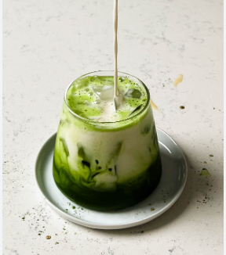

Matcha Recipe

Link To Recipe
About
This chocolate chip cookie recipe makes delicious cookies with crisp edges
and chewy middles.
- Total Time: 5 mins
- Servings: 1
Ingredients
- 3/4 cup filtered water
- 2 tsp ceremonial grade matcha
- 1 1/4 tsp vanilla bean paste
- 1/8 tsp kosher salt
- 2–3 tsp honey
- 1/2 cup almond milk
- Ice
-
Add the water into your frother, along with the matcha, vanilla bean
paste, and kosher salt.
-
Froth the matcha on the cold setting, and while the frother is still
going, stream in the honey. Streaming in the honey will ensure it
doesn’t stick to the frother whisk or sides.
-
In a glass, add a large handful of ice, pour over the matcha, followed
by the milk. Enjoy!